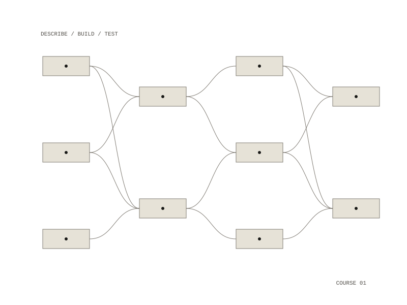

Training
Teaching materials for someone with no programming experience who wants to build working applications by describing them in plain English to a coding assistant, which writes, explains and fixes the code with them.

The tutorial
The tutorial runs in fifteen steps, from what a coding assistant is and how to talk to it, through setting up a safe place to run code, to building, testing and extending a first app. It asks the learner to say what they want in simple terms first: "I want to create a to-do list app", "It should let me add tasks", "It should let me mark tasks as done". It then shows how to ask for safety directly, with requests such as "How can I make this code more secure?" and "Can you make this run in a Docker container?"
One app, three times
The worked example is a to-do list that adds, shows and completes tasks. It comes in three versions:
- a simple version that demonstrates basic coding concepts
- a safer version with menus, error handling and safe file operations
- a web version with a browser interface and a small database, which works on desktop and phone
Running code safely
The course puts safety first: run everything in a container or a separate environment so it cannot touch the rest of the computer, check every input, and handle errors without exposing details of the system. The repository ships the container setup the tutorial walks through, so the example can be started with one command.
people with no programming experience
a step-by-step tutorial, a to-do list app three ways, Docker setup